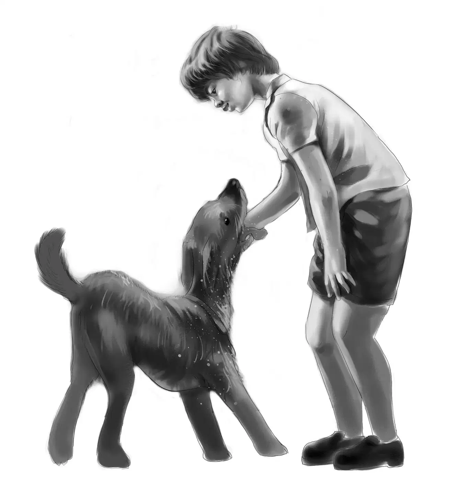
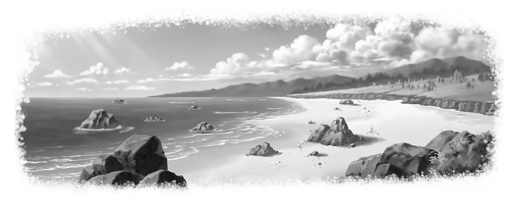
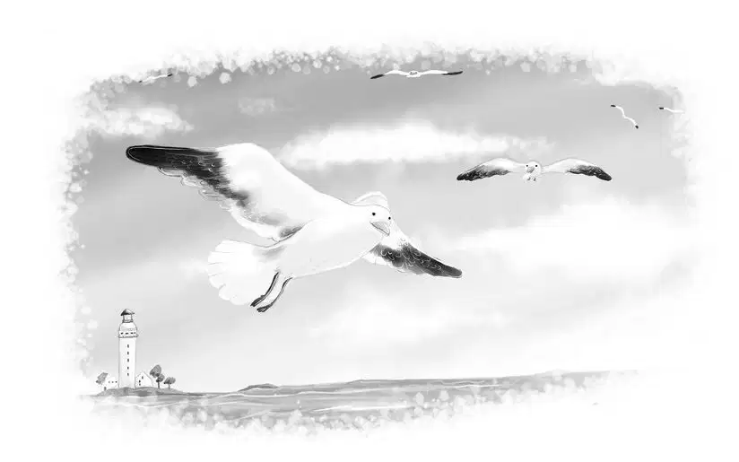
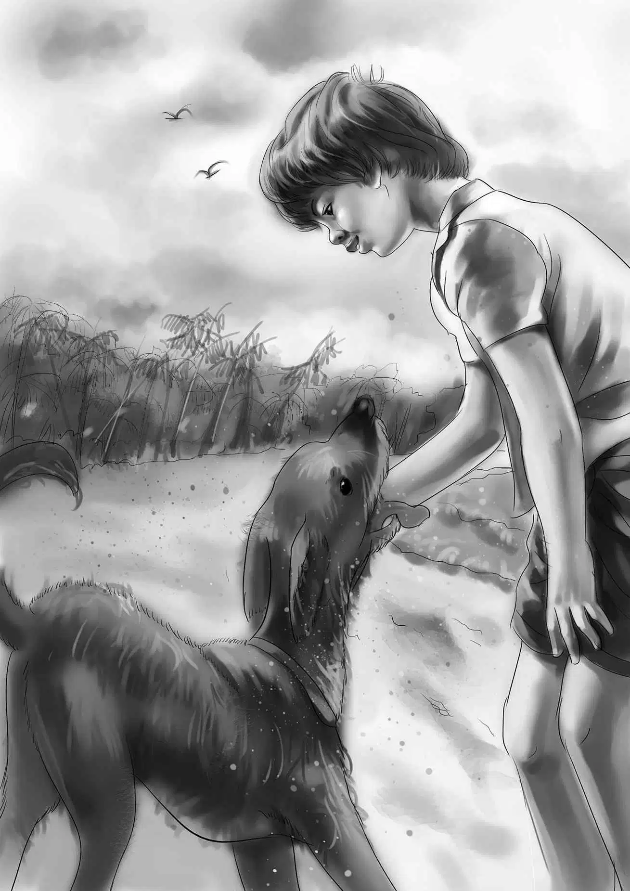
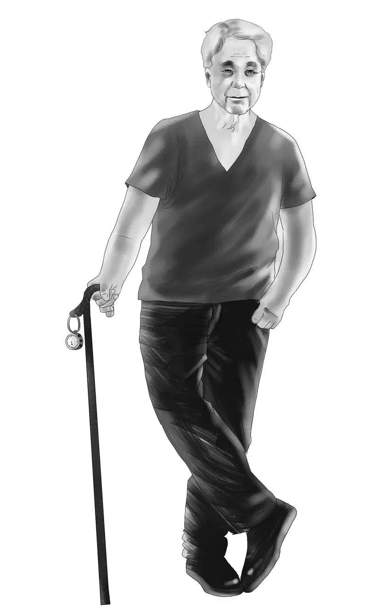

Jessie Alden stood at the door. “Oh, what a beautiful morning!” she said on that hot July day.
You can say that again, Jessie,” added Benny Alden. He looked out at the blue ocean and white sand. There was not a cloud in the sky.
Violet and Henry came to the door and looked out, too. The sea gulls were sailing around a fishing boat, making a great noise.
“This is the funniest thing,” said Benny. “Here we are at Aunt Jane and Uncle Andy’s new trailer at the beach. A day or so ago we were at home without the least idea of going anywhere at all.”
Benny called it a trailer, but it really was a mobile home. The outside was painted Aunt Jane’s favorite color, blue, with white trim. Inside there was one bedroom for the two girls. Benny and his brother Henry had a double couch in the living room.
Best of all, the trailer was right on the beach. Behind it was a great space of beach grass. But in front, the Aldens could step down two steps right into the sand.
“Let’s eat breakfast on the sand, Jessie,” suggested Violet. “It won’t be much work if we all carry our own dishes.”
“I’m more than willing to carry mine,” Benny said. “I’ll carry them all if we can eat right away.”

Henry laughed. Benny was always hungry—at home, on a trip, in the mountains, at the beach. Benny didn’t change.
“Come on, Ben,” Henry said. “You and I will fold up this bed into a couch.”
“OK,”said Benny.“Then our bedroom will look like a living room. Magic!”
In the tiny kitchen, the two girls worked fast, for they were hungry, too.
“Aunt Jane left the things we like best,” said Jessie. “I’ll cook the bacon and eggs, Violet, and you make the toast.”
There were four trays. One was red, one was blue, one was green, and the last was violet. There was no doubt about the tray each of the Aldens would take. Jessie took the blue one, Benny took the red.
“The food is the same on every tray,” Violet said. “It makes no difference what color tray.”
“Oh, yes, it does, Violet,” Benny objected. “I have to have red. And Henry doesn’t care.”
Henry laughed. He really didn’t care. All he wanted was breakfast.Of course he knew that Violet should have the one that was her color.
The four Aldens sat down on the sand and began to eat their first meal at the seashore.
“I don’t understand people,” Violet said suddenly. She took a bite of bacon. “Everyone on this beach is sleeping. It’s the best part of the day. And nobody is awake to enjoy it except us and the fishermen.”
It was true. Not a person was on the beach for nearly a mile.

Benny sat cross-legged, drinking milk. He said,“I think we are the luckiest people in the world. Something is always happening to us. Right?”
“Yes,” agreed Jessie. “Things seem to happen all of a sudden, so that makes it more exciting. Of course Grandfather Alden thinks up a lot of things for us to do.”
“Not this time,” replied Benny. “We owe this to Uncle Andy. What a man! He is so restless and always going somewhere. Then he doesn’t stay very long. It’s lucky Aunt Jane can keep up with him and go whenever he wants to go.”
Henry said slowly,“I believe Aunt Jane thought Uncle Andy would be happy to stay here all summer. He loves to go fishing and clamming and sailing. She didn’t buy this beautiful mobile home for just two weeks.”
“Well, that’s Uncle Andy for you,” Violet said peacefully. “Just the minute he heard about that special African trip he had to get tickets and go. But it was lucky for us. We can stay here or not, just as we like.”
“Just turn the key and go home when we feel like it,” Benny agreed. “It’s lucky Henry has a car of his own now.”
Henry laughed. “Yes, and isn’t it good I picked out a car big enough for all of us?”
“That was a fine breakfast,” Benny said. “It won’t take long to clean up.” But nobody moved.
“Look down the beach,” said Henry.
Far in the distance, the Aldens saw an old man and a dog. The man was walking very slowly up the beach, with the dog at his side.
“A trained dog, I guess,” said Jessie. “He stays right beside his master. I think the old man has a cane.” The others thought so, too.
The Aldens might have picked up their trays and gone inside. But they didn’t. They sat quietly, watching the old man and the dog. Once the man stopped in front of a large cottage. He seemed to rest on his cane, then to drag it along. The dog sat down near his master and waited.

“I wonder what in the world that man is doing,” said Benny. “He’s coming along again.”
“Just taking a walk,I guess,”said Jessie. “Everybody stops to pick up shells and pebbles. That’s what the man is probably doing.”
As the stranger came closer, the Aldens could see a ring on the end of the cane he carried. A box was fastened to the cane near the top.
Benny began to wonder if the old man was really just out for an early morning walk. Maybe other people were curious about him, too. That might be why he came out like this, early in the morning. How would the man feel about having the Aldens watch him? Benny thought about that.
At last the old man reached the Aldens. “Good day to you!” he said pleasantly. The minute he spoke, the Aldens knew he was an Englishman.
“Good morning,”the four Aldens replied together.
“Is your dog friendly?” asked Benny.
“Oh, yes, don’t be afraid of him. He’s just big, that’s all,” the man answered.
Henry and Benny both got to their feet.
“Hi, feller!” said Benny, holding out a finger. The dog licked Benny’s finger and then sniffed at his tray.
“Too bad,” Benny said. “The bacon’s all gone, boy.”
Jessie looked at the stranger very carefully. She liked him at once.He had kind eyes.His wrinkles were made by smiling. He was very brown from the sun.Jessie felt as if she had always known him.
The man looked back at Jessie and said, “I came by this trailer yesterday, and I thought a man and woman lived here. Now it seems to be four young people.”
Benny couldn’t help thinking to himself that this man knew everything that happened on the beach.

“You are right,” Jessie told him. “That was Aunt Jane and Uncle Andy Bean. This is their new mobile home. But they have gone on a trip, and we can stay here until they come back. It was a surprise to us, but that’s the way we like it.”
“Well, you will find this to be a beautiful beach,”said the old gentleman. “My name is Daniel Lee. I walk up the beach every morning before anyone is awake. That makes a two-mile hike. It is the best part of the day.”
“That’s exactly what we just said,”Benny exclaimed.“We said people were funny. They sleep through the best part of the day. You see, we are the only people awake on the beach, except for you and your dog.”
Henry said, “I’m Henry Alden. And the one who is talking is Benny. And these are our sisters, Jessie and Violet Alden.”
“Alden? Alden?”murmured their visitor. “Haven’t I heard that name? It sounds familiar. A fine manufacturer of plastics?”
“That’s our grandfather,” Jessie said.
“Good,” nodded Mr. Lee. “I hope that you will have a pleasant time in your trailer. And good day to you!”
He went off at once, with the big dog at his side.
Benny thought, “No one could do that man any harm as long as his dog is with him.”
The Aldens watched Mr. Lee as he seemed to rest on his cane and then drag it over the sand.
“I never saw a cane like that, did you, Henry?” Benny asked.
“Mr. Lee doesn’t really use it to help him as he walks,” Violet said. “What can it be?”
“I don’t know,” replied Henry. “There’s your mystery for our first morning, Ben.”
“All right,” Benny said with a laugh. “I’ll find out what it is. You just wait!”
Jessie asked, “How will you do that?”
“I’ll ask him,” Benny replied simply. “That’s the way to find out what you want to know. Go to headquarters. That’s what Grandfather does.”
Henry laughed. He said, “You are more like Grandfather Alden every day, Ben. I only hope Mr. Lee will answer your question, because we all want to know.”